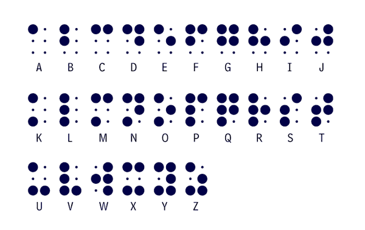

En este apartado, tenemos el honor y la necesidad, de mostrar la figura de un revolucionario en el desarrollo de un sistema de lecto escritura autónomo para personas ciegas o con deficit visual severo, el codigo braille. Sin duda la primera revolución en el acceso autónomo a la información para un colectivo que hasta la fecha dependian de otras personas en el aprendizaje, escritura y lectura. Vamos a conocerle.

Louis Braille, un niño curioso y entusiasta, nunca imaginó que su destino cambiaría el rumbo de la historia. Nació en 1809 en Coupvray, un pequeño pueblo francés. Hijo de un guarnicionero, creció rodeado de herramientas de trabajo, y un día, mientras jugaba en el taller de su padre, un accidente con un punzón le hizo perder la vista. Pero en lugar de verse limitado, Louis desarrolló una aguda intuición y un ansia infinita por el conocimiento.
A los diez años, fue admitido en el Instituto Nacional para Jóvenes Ciegos en París. En ese entonces, la lectura para personas ciegas era casi impensable. Los métodos de enseñanza se basaban en letras grandes en relieve, lentas y difíciles de comprender. Un día, Louis escuchó sobre un sistema de lectura militar en relieve llamado “escritura nocturna”, ideado para que los soldados leyeran en la oscuridad sin delatar su posición. Inspirado, comenzó a trabajar en un sistema de lectura adaptado a las necesidades de los ciegos.
Con paciencia y dedicación, Braille perfeccionó un sistema en el que usaba seis puntos en relieve para representar letras y números, una estructura tan sencilla como ingeniosa. Su método fue rechazado al principio por los académicos, pero Braille no se dio por vencido. En 1829, a los veinte años, presentó su sistema de puntos en relieve, que eventualmente fue adoptado en toda Europa y, más tarde, en el mundo. Su invento permitió a personas ciegas, por primera vez, acceder a la información y a los libros de una forma verdaderamente autónoma. La lectura en braille fue, literalmente, una ventana abierta a la independencia y la educación.
Tras la muerte de Braille en 1852, su legado comenzó a tomar fuerza. Instituciones de ciegos en Europa y América adoptaron su sistema, aunque en muchos lugares el cambio fue lento. Sin embargo, la semilla había sido plantada, y los beneficios del braille se hicieron evidentes. En los años que siguieron, una serie de innovaciones ayudaron a que el acceso a la información para personas ciegas siguiera evolucionando.
A finales del siglo XIX, los avances en tecnología y pedagogía abrieron nuevas puertas. En 1918, las máquinas de escribir braille, como la máquina Hall, facilitaron la escritura en este sistema. A medida que las prensas en braille se hicieron más accesibles, comenzaron a surgir publicaciones periódicas en braille, como la famosa revista Matilda Ziegler Magazine for the Blind, fundada en 1907 en Nueva York. Esta publicación ofrecía noticias, cuentos y artículos de interés general y contribuyó a que las personas ciegas pudieran participar activamente en la sociedad.
Tras la invención del braille, los cambios en el acceso a la información para personas ciegas avanzaron con lentitud pero con determinación. En 1860, se lanzó en Francia "Le Procédé", la primera publicación en braille, que permitió a las personas ciegas leer noticias y literatura en su propio sistema de lectura. Sin embargo, durante casi un siglo más, los libros y la información en braille fueron limitados, tanto en número como en disponibilidad. Esto comenzó a cambiar en los años 30, cuando la Biblioteca del Congreso de los EE.UU. lanzó el programa Talking Book. Pensado inicialmente como una respuesta a las necesidades de los veteranos de guerra, el programa permitió a personas ciegas escuchar literatura grabada en discos de vinilo, desde clásicos hasta novelas modernas. Este fue un paso esencial para ampliar el acceso a la literatura y la cultura de manera accesible.
Los años 50 y 60 trajeron consigo nuevas herramientas que facilitaron el aprendizaje y la independencia. En 1951, la Perkins Brailler irrumpió en el ámbito de la educación, revolucionando el proceso de escritura en braille. Esta máquina, parecida a una máquina de escribir, permitía a los estudiantes ciegos escribir de manera rápida y sencilla, proporcionando una herramienta que facilitó enormemente la educación y la participación académica. Poco después, en 1952, el matemático ciego Dr. Abraham Nemeth creó un sistema específico para matemáticas conocido como Nemeth Code, que permitía a las personas ciegas leer y escribir ecuaciones y expresiones matemáticas en braille.
Para los años 60, la tecnología comenzó a tomar un rol crucial en el acceso a la información. Un avance particularmente innovador fue el Optacon, desarrollado en 1963, que permitía a los usuarios leer texto impreso con una pantalla táctil que transformaba el texto en vibraciones táctiles. Esta innovación, aunque compleja de dominar, permitió a las personas ciegas acceder a libros, revistas y otros textos de una forma inédita.
A mediados de los años 70, el científico e inventor Raymond Kurzweil introdujo la primera máquina de lectura que utilizaba un sistema de reconocimiento óptico de caracteres (OCR), la Kurzweil Reading Machine. Por primera vez, el texto impreso podía convertirse en voz, permitiendo a las personas ciegas "leer" con la ayuda de una voz sintetizada. Este dispositivo resultó ser un cambio radical, especialmente para el acceso a documentos y periódicos, e impulsó el desarrollo de más dispositivos de accesibilidad basados en la conversión de texto a voz. También en 1976, el sistema de voz Votrax Personal Speech System mejoró la forma en que las personas ciegas interactuaban con la informática emergente, abriendo las puertas al mundo digital.
Con cada paso, desde la creación del sistema braille hasta el uso de sintetizadores de voz, la historia de la accesibilidad ha sido un reflejo de creatividad y perseverancia. Las personas ciegas y con baja visión han podido conectarse al conocimiento de maneras antes inimaginables, todo gracias a avances constantes que rompieron barreras e impulsaron la inclusión.
| Tipo de Ayuda | Nombre | Año de Creación | Empresa/Persona Creadora | Descripción |
|---|---|---|---|---|
| Escritura táctil | Braille | 1824 | Louis Braille | Sistema de puntos en relieve que permite a personas ciegas leer y escribir; el primer método de lectura accesible. |
| Prensa en braille | "Le Procédé" | 1860 | Louis Braille | Publicación en braille que permitió el acceso a noticias; un avance para la inclusión en la información pública. |
| Audiolibros | Talking Book Program | 1932 | Biblioteca del Congreso de EE.UU. | Ofrecía libros grabados en discos de vinilo; un recurso crucial para el acceso a la literatura y la educación. |
| Grabación de sonidos | SoundScriber | 1939 | SoundScriber Corporation | Máquina de dictado que ayudaba a ciegos a grabar notas o leer documentos; una opción para quienes no usaban braille. |
| Máquina de escribir braille | Perkins Brailler | 1951 | Perkins School for the Blind | Permite escribir en braille rápidamente; revolucionó la educación de personas ciegas al facilitar la toma de notas. |
| Regla táctil de matemáticas | Nemeth Code | 1952 | Dr. Abraham Nemeth | Sistema de braille para matemáticas; facilita el aprendizaje de matemáticas y ciencias a personas ciegas. |
| Sistema de escritura eléctrica | Optacon | 1963 | Telesensory Corporation | Convierte texto impreso en una pantalla táctil en braille; facilitaba la lectura de textos impresos. |
| Sistema de reconocimiento de texto | Kurzweil Reading Machine | 1976 | Raymond Kurzweil | Convertía texto impreso en audio; una innovación para la lectura de documentos de personas con discapacidad visual. |
| Ordenadores con sintetizadores de voz | Votrax Personal Speech System | 1976 | Votrax | Convertía texto escrito en audio; permitía a personas ciegas interactuar con la tecnología informática emergente. |
Otra figura clave fue Helen Keller, una joven estadounidense sorda y ciega, que, junto a su maestra Anne Sullivan, demostró que las personas con discapacidades sensoriales podían ser educadas y alcanzar sus sueños. Helen se convirtió en una célebre escritora y oradora, y su ejemplo ayudó a que la sociedad reconociera la importancia de la educación accesible.
En los años 60 y 70, la tecnología trajo nuevos avances. Las cintas de audio y los “talking books” permitieron a las personas ciegas escuchar obras literarias, y en 1972, la Organización Nacional de Ciegos de los Estados Unidos lanzó una biblioteca de audiolibros que pronto se expandió internacionalmente. Este fue un paso crucial, ya que las grabaciones de voz empezaron a complementar el uso del braille.
En 1976, Ray Kurzweil desarrolló el primer lector de texto impreso a voz, utilizando un sistema de reconocimiento óptico de caracteres (OCR). Aunque primitivo en comparación con la tecnología actual, el lector fue revolucionario y permitió a personas ciegas acceder a casi cualquier texto impreso, escaneando y reproduciendo la información en voz.
Para 1980, el acceso a la información para personas ciegas era un derecho cada vez más reconocido. Gracias a los pioneros como Louis Braille y a los desarrollos tecnológicos que siguieron, una generación de personas ciegas creció con mayores oportunidades de educación y de participación activa en la sociedad. El braille había dado el primer paso, y los avances técnicos seguían abriendo caminos hacia un futuro con igualdad de acceso para todos.